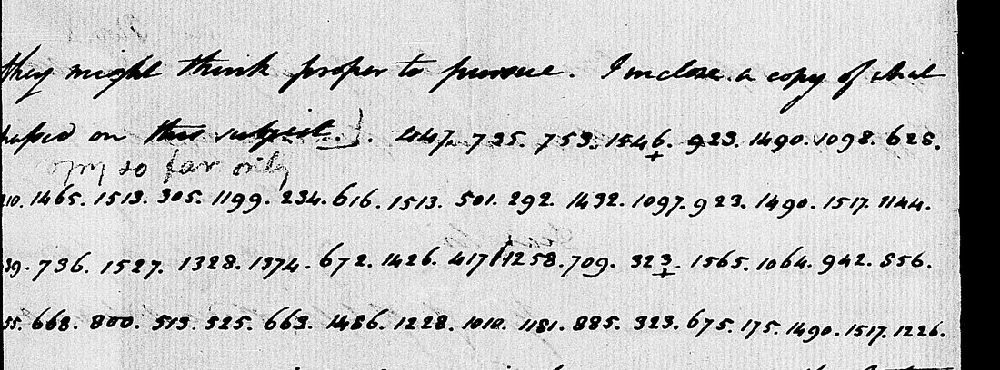
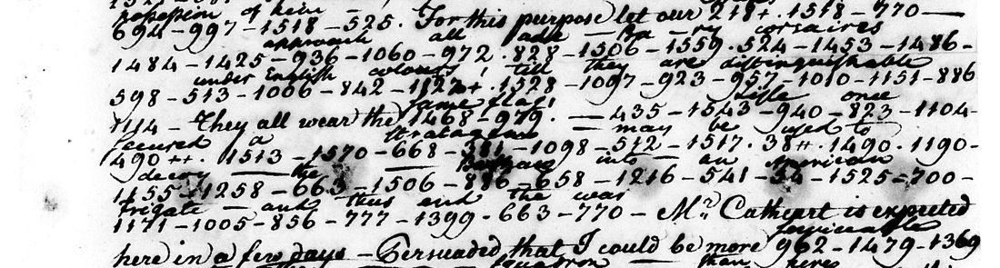

At a glanceExisting decipherment · complete
- The letters
- Thomas Pinckney to Jefferson, London, 28 August 1793, a coded passage of 58 groups. Six later documents in the same code: Pinckney from Spain and Paris in 1795 (two files), William Eaton from Tunis on 25 May 1801, the Bey of Tunis to Jefferson of 8 September 1802 in Eaton’s coded copy with Eaton’s postscript, Eaton on 22 October 1802, and Tobias Lear in January 1813.
- Where
- National Archives, RG 59: Despatches from US Ministers to Great Britain (microfilm M30 roll 2, frame 140), from US Ministers to Spain (M31 roll 7) and from US Consuls in Tunis (T303 roll 2). Library of Congress, James Monroe Papers, reel 5. The 1793 letter was part of catalogue no. 484.
- The cipher
- A two-part code: numbers for words, syllables and letters, in no alphabetical order. The editors of Jefferson’s papers call it Code No. 16; Weber’s study of American codes calls it the “663” code, after its number for the.
- How it was deciphered
- Six of the seven documents carry a decipherment written between the lines at the time, or, for the Bey’s letter, a translation printed in 1802. The 1793 passage has none; the editors of The Papers of Thomas Jefferson printed it deciphered in part, and here each of its groups was checked against values decoded at the time in the other letters.
- What it says
- Grey’s expedition preparing for the West Indies; Spain’s delays over the treaty of 1795; Eaton’s plans against Tripoli and Tunis; the Bey of Tunis asking for “a good frigate of thirty six guns”; the Spanish Regency’s talk of war in 1813.
- Still open
- In the 1793 passage, 447 (how many regiments) and the first group of a general’s name. In the later letters, line ends hidden in the binding and some blotted words. Of the code itself, 537 of about 1,600 groups have a value in the key used here (549 in a later version), and two values are in dispute.
- Credit
- The 1793 passage was first printed by the editors of The Papers of Thomas Jefferson (vol. 26, 1995). George Taylor Jr., Jacob Wagner, John Graham and hands not named wrote the decipherments of the time. Andrew Beling, working with AI agents, found the code in the six later letters, transcribed them, rebuilt 537 groups of the code (549 in a later version) and corrected the grading of the 1793 passage (November 2026).
01 One code, seven documents
Thomas Pinckney, the American minister in London, wrote to Jefferson in a numerical code that the editors of Jefferson’s papers number 16; by their note he used it from 20 June 1793. It is a two-part code: each number stands for a word, a syllable or a letter, and the numbers follow no order, so an unknown number cannot be placed between its neighbours. No key sheet has been printed. Weber’s study of American diplomatic codes (1979, p. 155) calls it the “663” code, after its number for the, and lists it as not located.
| Document | Groups | Words from |
|---|---|---|
| Pinckney to Jefferson, London, 28 August 1793 | 58 | the Jefferson Papers editors, in part; no decoding of the time |
| Pinckney, the coded parts of his letters of 21 July and 11 August 1795 from Spain, sent again in the Department’s code on 27 August, and of 1 October 1795 | 295 | George Taylor Jr.’s interlinear |
| Pinckney, San Lorenzo, 28 October 1795, with his notes on the treaty, and Paris, 18 December 1795 (the file also holds the first coded line of 1 October, ten groups counted in the row above as well) | 224 | a clerk’s interlinear and margin |
| William Eaton to the Secretary of State, Tunis, 25 May 1801 (two copies) | 196 | Jacob Wagner’s interlinear |
| Hammuda Bey of Tunis to Jefferson, 8 September 1802, in Eaton’s coded copy, with Eaton’s postscript (enclosed 9 October 1802) | 468 + 94 | the English translation printed in 1802; for the postscript, the Madison Papers editors |
| Eaton to Madison, Tunis, 22 October 1802 | 92 | an interlinear on the page |
| Tobias Lear to Madison, [January] 1813 | 354 | John Graham’s interlinear |
Until 11 November 2026 these documents shared a page with two letters to Jefferson in other codes, William Short’s of 1792 and William Carmichael’s of 1788: different codes, with their own page.
02 Pinckney, 28 August 1793
Pinckney’s despatch is on the State Department microfilm of his London letters. Jefferson pencilled “copy so far only” above the coded lines; the clerk’s copy omits them, and the page carries no decoding of the time. The coded passage is five lines, 58 groups; the first digits of four lines are lost in the binding. The editors of The Papers of Thomas Jefferson printed it “deciphered in part”, with one group left as a number and three readings in brackets.

Pinckney wrote six other letters in the same code that George Taylor Jr. decoded between the lines at the State Department (20 June, 25 September, 27 November and 17 December 1793, 28 January and February 1794). For his letter of 25 November 1793 a clerk’s clear text, headed “Explication of the Cyphers”, is on the next frame. All fifteen coded frames of the roll were transcribed (about 2,660 groups), and every value decoded there was set against the 28 August groups. Thirty of the 58 groups were confirmed that way, word for word as the editors had them: 753 i (reg-i-ments), 1490 1517 to be, 709 with, 323+ generals (+ marks a plural), 856 and, 513 525 under him, 885 is, 175 thought, 1226 for. The later letters in the same code (section 03) confirm nine more, which makes 39: 923 are (twice), 234 time, 501 secret, 1328 1374 Si-r, 668 at, 1010 tin (des-tin-ation) and 675 ly.
447 regiments are to embark in a short time on a secret expedition. They are to be commanded by Sir Charles Grey with Generals Stuart and [?55]ats under him. Their destination is generally thought to be for the West Indies.
The group the editors printed as 497 is 447 on the original. It occurs nowhere else in Pinckney’s code, and none of the number words decoded elsewhere matches it (6 is 1244, 8 is 531, “nine” is 383 or 6?4), so how many regiments he wrote stays open. The editors’ guesses time (234) and secret (501) occur nowhere else in Pinckney’s London letters, but both stand under those words in Tobias Lear’s letter of 1813, so they are no longer guesses. Their third guess does not hold as spelled. The second general’s name is three groups, ?55 668 800, and the editors printed [Dunda]s; 668 is at in Eaton’s letter of 1801, Pinckney’s of 1795 and the Bey’s of 1802, so the groups give a name ending in -at-s, and its first group is in the binding. Because Sir is 1328 1374, Charles is the single group 672. The long letter of 15 August 1793, about a thousand groups with no interlinear decoding, is not open: the State Department made a clear copy of it.
| Count of | Groups | H | M | I | Open |
|---|---|---|---|---|---|
| 27 October 2026 | 58 | 30 | 23 | 4 | 1 |
| 11 November 2026 | 58 | 39 | 17 | 0 | 2 |
H is a value decoded at the time in another letter of the code, M the editors’ reading only, I a conjecture by context. The second open group of November is the first group of the general’s name, which the October count had under the editors’ conjecture.
03 Six later letters
In November 2026 Andrew Beling, working with AI agents, showed that Pinckney’s London code went on being used. He found it in six more documents (the last six rows of the table in section 01). All but one carry a decipherment written between the lines at the time; the Bey’s letter has an English translation printed in 1802.

That the six documents use Pinckney’s code can be checked without Beling’s key. The value table made here in October holds only values from Pinckney’s letters of 1793–94. Set against the single-group words of the new letters, it agrees on 61 of 70 in Lear’s letter, 177 of 178 in the Bey’s, 29 of 36 in Eaton’s of 1801, 66 of 70 and 42 of 44 in Pinckney’s of 1795, and 21 of 28 in Eaton’s of 22 October 1802. The best of 200 shuffled tables agrees on between 2 and 20. The misses are syllables and inflections: 541 is an, not another.
The letters themselves:
- Pinckney, 1795. The coded phrases of his reports from Spain while he negotiated the treaty with Spain. The court is “still anxious for further delay, which is to them equivalent to a cession of our rights so long as we shall acquiesce therein”. There is talk of “a triple alliance between france, Spain and ourselves” and of a guarantee of Spain’s American possessions. In October he “had asked for my passports to return”.
- Eaton, 25 May 1801. Tripoli has declared war. In code Eaton proposes to seize the Tripolitan commodore, “a British Renegade, Morad Rais; Alias, Peter Lisle”, by approaching the corsairs under English colours, and to go on board the American squadron himself.
- The Bey of Tunis, 8 September 1802. The Bey thanks Jefferson for the stores and jewels and asks for “a good frigate of thirty six guns”. Eaton put the Bey’s letter into code and added a postscript of his own: “If the Bey’s letter should provoke resentment, Porto Farina may be taken by surprise” and the Bey’s arsenal and ships destroyed. He repeated it in his letter of 22 October.
- Lear, January 1813. The Spanish Regency has laid before the Cortes “an exposition of the conduct of the United States toward Spain” and would recommend “a declaration of war instantly, if the actual circumstances of this Kingdom did not forbid it”. The sheet reached Washington under a blank cover, and a note on it says “Mr Lears Cyp[her] was used to read it”.
Earlier work, as Beling found it: the Madison Papers editors deciphered Eaton’s postscript and Lear’s letter with a key from the Lear family papers that was never printed, and the Jefferson Papers editors used a partial reconstruction of their own, also unprinted. He found no one who had said that Pinckney’s London code and the code of Eaton and Lear are one. (The editions were not opened for this page.)
04 The key and its tests
No key sheet of the code is public, so its values have to be collected from the decipherments. The table made here in October has 262 values, from Taylor’s decodings of Pinckney’s letters of 1793–94 and the Explication. Beling’s key, in the version the texts below were checked with (his v4), has 537 groups, each graded: 158 stand alone under one word of a decipherment; 192 are the only entry of Weber’s printed word list of some 1,600 elements that fits the words they occur in; 125 were taken by aligning Pinckney’s undecoded London letters to their printed texts; 62 are taken from the October table.
By his record, he froze a key of 311 groups before testing it (the key and the declaration reached us together, so the order rests on his timestamps). On Pinckney’s 1795 passages it gave the clerk’s word for 93 of 105 groups (0.886, against 0.105 for the best shuffled key), which passes the bar of 0.85 set beforehand. On Eaton’s letter of 1801 it gave 48 of 60 (0.80), under the bar; four of the twelve misses are right syllables that the scoring rule does not credit. On Eaton’s passage of 22 October 1802 it gave 44 of 49 (0.898), but that passage repeats the postscript of 9 October, so it is not new text. His re-implemented scoring script, re-run here, gives 94 of 107 (0.879) and 51 of 64 (0.797), the same verdicts; the original runs were not kept, and the 22 October score could not be re-run here.
A fourth test, sent on 11 November 2026, failed. It was written down beforehand, by his record: the frozen key, less the 35 values that had been taken here partly from the same page, was to be scored on Pinckney’s coded page of 25 November 1793 (M30 roll 2, frame 0178) against the letter as printed in American State Papers, Foreign Relations 1:327–28, with the same bar of 0.85. It matched 126 of 174 groups, 0.724 (best shuffled key 0.264), which is under the bar. The cause was found after the run: the printed text leaves out the last paragraph of the clerk’s “Explication” of the page (frame 0179), in which Pinckney asks for a frigate to take him home if he is told to withdraw, so the groups of that paragraph had nothing to match. Scored afterwards against the whole Explication the same key gives 165 of 174 (0.948; best shuffled key 0.287). That figure is post hoc, with the comparison text changed after the result was known, and it is not a passed test. Both scores were re-run on integration from the committed files and came out the same, and the missing paragraph was seen on frame 0179. The printed volume itself was not opened, only the extract in the repository. The failed test does not show any value of the key to be wrong, and none was changed because of it.
The same follow-up adds Pinckney’s coded letter of 28 January 1794 and his postscript of 26 February 1794 (frames 0196 and 0208), transcribed with the clerk’s words over them, and a later version of the key, v5, with 549 groups. It adds 13 values, among them 1160 for the comma, and by Beling’s account corrects four values of v4: 1366 is g, not ge; 631 is sixth, not th, as the October table already had it; 598 becomes es; and 640 loses its value. Two of these are not settled. For 640 the October table has in, v4 has es, v5 has nothing, and v5’s own values make it ju in “prejudices”. For 598 the clerk wrote “fourth” over the group in Pinckney’s letter of 28 October 1795 (“the twenty fourth of October”), while three other words want es (acquiesce, ties, Regencies). v5 calls the middle digit of that group doubtful; on the frame, looked at on integration, it reads 598. The clerk’s “fourth” is kept as the value there and es is recorded as the alternative. The count of comma strokes behind 1160 also differs between two of his files (16 or 14). None of these groups occurs in the 1793 passage, and the texts below show the clerks’ words, so no reading changes. The new transcriptions of frames 0196 and 0208 were not compared with the images here.
His key also decodes 81% of the 1,982 groups in Pinckney’s London letters that have no decoding of the time, 62% without the values taken from those letters or from the October table. That decode is not yet built into sentences and is not shown here; the editions print most of those letters in clear.
05 How it was done
- The printed text and notes of the 1793 letter were taken from Founders Online, and the original from the National Archives catalogue (M30 roll 2, frames 101–330).
- All fifteen coded Pinckney frames of 1793–95 on that roll were transcribed with their decodings. A subagent did the long transcription; the open group was re-read at 2× by hand.
- The values decoded at the time were collected in
key.tsv: 262 values, from Taylor’s decodings and the Explication. Each group of the 1793 passage was then graded: decoded elsewhere in the same code (H), the editors’ reading only (M), a conjecture by context (I), or open. - For the six later letters, Beling transcribed the numbers and the words above them from the National Archives and Library of Congress images, the 1801 letter from both copies and the 22 October 1802 passage twice, by two readers working apart and without a key. The texts below were put together from his files and read through as sentences. Four words of Eaton’s 1801 letter where the interlinear was doubtfully transcribed (one of them blotted) are marked doubtful.
- The open groups of 1793 were searched for in every transcribed letter of the code.
Across the seven texts below, 1,384 words read and 51 are holes or doubtful, 96.4%. Each text carries its own share; two are under 95%, so they are partial.
06 What remains
- 447: before “regiments” in the 1793 passage; one occurrence, no decoding, not among the code’s known number words, and in none of the six later letters, nor on Pinckney’s frames 0178, 0196 and 0208 as transcribed again in November 2026. Pinckney’s own press copy, in the Pinckney Family Papers at the South Carolina Historical Society, is not online.
- ?55 668 800: the second general’s name, ending -at-s by the code. The first digits of ?55 are in the binding.
- Pinckney, October and December 1795: line ends of the letter of 28 October are hidden in the binding and the last coded line of 18 December is in shadow. The text is partial.
- Eaton, 22 October 1802: six words over the passage are blotted. The text is partial; the passage repeats the postscript of 9 October, which is whole.
- The code itself: 537 of about 1,600 groups have a value in key v4, and 125 of those come from alignment to printed texts; v5 has 549. The values of 598 and 640 are in dispute between the key files (section 04). The original key from the Lear family papers has not been printed.
Full texts
The transcription and the decryption of every document on this page, so that the reading can be used and checked. Short files are shown here; all are in the repository.
Thomas Pinckney to Jefferson, London, 28 Aug 1793 (Code No. 16)
Three coded sentences: regiments are to embark shortly on a secret expedition under Sir Charles Grey with Generals Stuart and a second general whose name is not recovered (the editors conjectured Dundas), generally thought to be for the West Indies; the number of regiments (447) stays open.
Transcription
# Thomas Pinckney to Jefferson, London, 28 Aug 1793 (Code No. 16): code groups as transcribed, one line per manuscript line 447.735.753.1846.923.1490.1098.628. ?10.1465.1513.305.1199.234.616.1513.501.292.1432.1097.923.1490.1517.1144. ?39.736.1527.1328.1374.672.1426.417.1258.709.323+.1565.1064.942.856. ?55.668.800.513.525.663.1486.1228.1010.1181.885.323.675.175.1490.1517.1226. ?3.81.
Decryption
pinckney_17930828_decryption.txt
# Thomas Pinckney to Jefferson, London, 28 Aug 1793 (Code No. 16): group = reading [grade]; T TJ interlinear, H attested elsewhere, E editors, C conjecture, O open 447=—[O] 735=reg-[E] 753=-i-[H] 1846=-ments[E] 923=are[H] 1490=to[H] 1098=em-[E] 628=-bar-[E] ?10=-k[E] 1465=in[H] 1513=a[H] 305=sho-[E] 1199=-rt[E] 234=time[H] 616=on[H] 1513=a[H] 501=secret[H] 292=expedi-[E] 1432=-tion[H] 1097=they[H] 923=are[H] 1490=to[H] 1517=be[H] 1144=com-[H] ?39=-man-[E] 736=-ded[H] 1527=by[H] 1328=Si-[H] 1374=-r[H] 672=Charles[E] 1426=Gre-[E] 417=-?-[E] 1258=-y[H] 709=with[H] 323+=generals[H] 1565=St-[H] 1064=-ua-[E] 942=-rt[E] 856=and[H] ?55=[?][O] 668=-at-[H] 800=-s[H] 513=under[H] 525=him[H] 663=the-[H] 1486=-ir[E] 1228=des-[H] 1010=-tin-[H] 1181=-ation[H] 885=is[H] 323=general-[H] 675=-ly[H] 175=thought[H] 1490=to[H] 1517=be[H] 1226=for[H] ?3=the[E] 81=West Indies[E]
Reading
# Thomas Pinckney to Thomas Jefferson, London, 28 August 1793, the coded passage (Code No. 16), NARA M30 roll 2 frame 0140. # 447 = open (the editors printed 497). [?55]ats: the editors conjectured [Dunda]s, but 668 is "at" in Eaton 1801, Pinckney 1795 and the Bey's letter of 1802, so the # name is ?55 + at + s and stays open. time (234) and secret (501) are attested in Lear's letter of 1813 (beling/, PR #399). 447 regiments are to embark in a short time on a secret expedition. They are to be commanded by Sir Charles Grey with Generals Stuart and [?55]ats under him. Their destination is generally thought to be for the West Indies.
Thomas Pinckney to the Secretary of State, coded parts of 21 Jul and 11 Aug 1795 (re-enciphered, enclosed 27 Aug) and of 1 Oct 1795 (Code No. 16)
The coded phrases of Pinckney's letters from Spain during his negotiation of the treaty of 1795, sent again in the Department's cipher ("Cypher 2d") with a covering letter of 27 August: Spain's wish for delay, a triple alliance with France, and a guarantee of her American possessions. The enclosure holds only the coded passages, so each stands apart from its clear sentence.
Transcription
# Thomas Pinckney, the coded parts of his letters of 21 Jul and 11 Aug 1795 re-enciphered in "Cypher 2d" (enclosed 27 Aug 1795), and of 1 Oct 1795 (Code No. 16): code groups as transcribed, one line per manuscript line; ? doubtful digit, _ or * digits lost, # + ++ ^ marks written with the group. Clear words on the coded lines are left out here (they are in the decryption). # Source: NARA RG 59, M31 roll 7, frames 0018-0021. Transcription: Andrew Beling (beling/witnesses/, PR #399). 0018-L01 1492 1144 478 798 673 411++ 709 332 1465 1571 0018-L02 _97+ 0018-L03 _78 668 1313 182++ 541 936 1144 316 11*1 59 1557 0018-L04 _56 582 369 604 589+ 278 941 1479 698 675 936 0018-L05 _12 892++ 1527 663 566 605 0018-L06 194 805 20+ 1490 469 1465 332 200 1578 1018 1518 0018-L07 1069 564 1127 209 1097 1408 723 1490 983 604 589+ 0018-L08 567 856 930 982 1075 940^ 0019L-L01 1058? 1097 923 1569? 728^? 541 1122 753 698 1226 0019L-L02 331 150 1069 564 515 885? 1490 361 265? 640 972 0019L-L03 1435 1490 1513 1063 373 1518 604 589+ 1099 254 913 0019L-L04 1124 986^ 936 1259 598 1369 356 1465 1097? 1517 134? 0019L-L05 1465 694 997 1518 663 964+ 1518 1291 817 798 1258 0019L-L06 967 930 982 1075 940^ 663 694 997+ 1518 1557 0019L-L07 1465 54 0019L-L08 1569 420 1197+ 616 194 1580? 785 1465 604 290 125_ 0019L-L09 709 582 614 1517 638++ 0019L-L10 332 936 1144 316 1181 709 582 0019L-L11 189 1513 988 592 567 59 582 1557 856 604 1008+ 0019L-L12 541 567 0019L-L13 1465 47+ 1518 663 1492 829 1546 709 94 1490 604 54_ 0019L-L14 1421? 0019R-L01 _513 930 982 1075 940^ 1518 332 694 997+ 1465 54 0019R-L02 _++ 492 1208 1350 429 0019R-L03 _71? 1457 371++ 856 1107 785 1515 1527 604 829 1546 0019R-L04 37 663 930 982 1075 940^ 0019R-L05 _490 1484 941 588 782 482 22++ 270 649 309 885 0019R-L06 _58 663 548 393 1362 997 1518 1557 709 94 1490 0019R-L07 _1? 1408 1465 225 361 1490 342 1490 1513 937 885 0019R-L08 _97 709 983 0020-L01 1521 1004 906 612 663 120 1355 1162 1432 1518 0021-L01 484 574+ 856 967 612 200 1578 1018 1208 785 1488? 598 1497? 0021-L02 1565 1517 1013 <1469?> <1288?> [728? 1475 675] 965 766 474 1515 0021-L03 435 935 1518 1368 1258 1206 1375 87 983
Decryption
pinckney_179508_decryption.txt
# Thomas Pinckney, the coded parts of his letters of 21 Jul and 11 Aug 1795 re-enciphered in "Cypher 2d" (enclosed 27 Aug 1795), and of 1 Oct 1795 (Code No. 16): groups=word written over them at the time; ~ after a word = its placement over the groups is
# ambiguous; {..} = clear text on the line; "groups=" alone = nothing written over the group. Interlinear: George Taylor Jr.'s (State Department).
0018-L01 1492=French 1144.478=commissioners 798=— 673=have 411++=complied 709=with 332=their 1465.1571=instruct
0018-L02 _97+=ions.
0018-L03 _78=minister~ 668=at 1313=paris 182++=offered 541.936.1144.316=an accommodation~ 11*1=— 59=between 1557=Spain
0018-L04 _56=and 582=france 369=unless 604=our 589+=rights 278=were 941.1479=previously 698.675=—— 936=ac —
0018-L05 _12.892++=knowledged 1527=by 663.566.605=the former.~
0018-L06 194=This 805=court 20+=means 1490=to 469=proceed 1465.332.200=in their system~ 1578.1018=—— 1518=of
0018-L07 1069.564=delay 1127=or 209=whether 1097=they 1408=will 723=yield 1490=to 983=us 604=our 589+=rights
0018-L08 567=alliance 856=and 930.982.1075.940^=guarantee~
0019L-L01 1058?=That 1097=they 923=are 1569?=still 728^?=— 541.1122=anxious 753.698=——— 1226=fo[r]
0019L-L02 331=further 150=— 1069=delay 564=— 515=which 885?=is 1490=to 361=them 265?.640.972=equivalent~
0019L-L03 1435=—— 1490=to 1513=a 1063=cession 373=—— 1518=of 604=our 589+=rights 1099=so 254=long 913=as
0019L-L04 1124=we 986^=shall 936.1259=acquiesce 598.1369=—— 356.1465=therein — 1097?=they 1517=being 134?=——
0019L-L05 1465=in 694.997=possession — 1518=of 663=the 964+=object 1518=of 1291.817=controversy 798.1258=———
0019L-L06 967=not 930.982.1075.940^=guarantee~ 663=the 694.997+=possessions 1518=of 1557=Spain
0019L-L07 1465=in 54=America.
0019L-L08 1569.420=Stipulations 1197+=— 616=on 194.1580?.785=this subject~ 1465=in 604=our 290=treaty 125_=—
0019L-L09 709=with 582=france 614.1517=should be~ 638++=observed.
0019L-L10 332=Their 936.1144.316=accomodation 1181=—— 709=with 582=france
0019L-L11 189=Establish 1513=a 988=triple 592=— 567=alliance 59.582.1557.856=between france Spain, &~ 604.1008+=ourselves.
0019L-L12 541=an 567=alliance.
0019L-L13 1465.47+=Intentions 1518=of 663=the — 1492=french 829.1546=government 709=with 94=respect 1490=to 604=our 54_=negotiat[ion]~
0019L-L14 1421?=here.
0019R-L01 _513=[..]a~ 930.982=guarantee 1075.940^=——— 1518=of 332=their 694.997+=possessions 1465.54=in america~
0019R-L02 _++=[..]ed~ 492=much 1208.1350.429=mortified. —~
0019R-L03 _71?=[..]d~ 1457=been 371++=considered 856=and 1107.785=rejected 1515.1527=by —~ 604=our 829.1546=government
0019R-L04 37=[..]hout~ 663=the 930.982.1075.940^=guarantee~
0019R-L05 _490=[.]o~ 1484.941=appreciate 588.782=——— 482=those 22++.270.649.309.885=circumstances my present Opinion is~
0019R-L06 _58=[..]at~ 663=the 548=new 393.1362=position~ 997=——— 1518=of 1557=Spain 709=with 94=respect 1490=to
0019R-L07 _1?=[..]land~ 1408=will 1465.225.361.1490=induce them to —~ 342=come 1490=to 1513=a 937.885=decision
0019R-L08 _97=—— 709=with 983=us.
0020-L01 {[m]easures are} 1521.1004.906.612.663.120.1355.1162.1432.1518=adopted from the fluctuation of ———~
0021-L01 484.574+=occurrences 856=and 967=not 612=from 200.1578=system~ 1018.1208.785=conjectures~ 1488?=must 598.1497?=———
0021-L02 1565=— 1517=be 1013=wildly~ <1469?>.<1288?>= [728?.1475.675]= 965.766=hazarded 474.1515=———
0021-L03 435.935.1518=line of ———~ 1368.1258.1206.1375=steady conduct ———~ 87.983=toward us~ {and I con[clude]}Reading
# Thomas Pinckney to the Secretary of State: the coded parts of his letters of 21 July and 11 August 1795, re-enciphered in "Cypher 2d" # and enclosed on 27 August 1795, and the coded lines of his letter of 1 October 1795 (Code No. 16), NARA M31 roll 7 frames 0018-0021. # The words are George Taylor Jr.'s, written over the groups. Each paragraph is one coded passage; the clear sentences they belong to are in the letters themselves and are not repeated in the enclosure. # [...] = the start of the line is lost in the binding; [?word] = doubtful. The cyphered part of the letter of 21 July 1795 (frame 0019 left, then 0018): That they are still anxious for further delay, which is to them equivalent to a cession of our rights so long as we shall acquiesce therein, they being in possession of the object of controversy. not guarantee the possessions of Spain in America. Stipulations on this subject in our treaty with france should be observed. Their accomodation with france. Establish a triple alliance between france, Spain and ourselves. an alliance. Intentions of the french government with respect to our negotiation here. French commissioners have complied with their instructions. [...] minister at paris offered an accommodation between Spain and france unless our rights were previously acknowledged by the former. This court means to proceed in their system of delay, or whether they will yield to us our rights. alliance and guarantee. The cyphered parts of the letter of 11 August 1795 (frame 0019 right): [...] a guarantee of their possessions in america. [...] much mortified. [...] been considered and rejected by our government. [...] the guarantee. [...] appreciate those circumstances my present Opinion is [...] the new position of Spain with respect to [?England] will induce them to come to a decision with us. San Ildefonso, 1 October 1795 (frames 0020-0021): for where measures are adopted from the fluctuation of occurrences and not from system, conjectures must be [?wildly] hazarded. to induce a line of steady conduct toward us.
Thomas Pinckney to the Secretary of State, San Lorenzo 28 Oct 1795 (with notes on the treaty) and Paris 18 Dec 1795 (Code No. 16) read in part
Coded stretches from Pinckney's letter of 28 October 1795 with his notes on the treaty, and of 18 December from Paris: he had asked for his passports when an accommodation seemed impossible; Spain wished to keep her commercial advantages as the equivalent for a guarantee of her American possessions. Only the coded lines were transcribed, and the binding hides line ends, so the text is fragments.
Builds coherent sentences, but under the read bar of 95% of words read as sense (94% here); the holes are marked in the reading.
Transcription
# Thomas Pinckney, San Ildefonso 1 Oct, San Lorenzo 28 Oct (with his notes on the treaty) and Paris 18 Dec 1795 (Code No. 16): code groups as transcribed, one line per manuscript line; ? doubtful digit, _ or * digits lost, # + ++ ^ marks written with the group. Clear words on the coded lines are left out here (they are in the decryption). # Source: NARA RG 59, M31 roll 7, frames 0020, 0111, 0134-0135, 0177. Transcription: Andrew Beling (beling/witnesses/, PR #399). 0020-R-19 1321 1004 906 612 663 120 1355 1162 1432 1518 0111-L-8 967 940 1_ 0111-L-9 663 1493 598 1518 237 1058 753? 1231? 1515? 1475 663 0111-L-10 1230+ 0111-L-11 1465 1588 1126? 1058 0111-L-12 270 1650^ 460+ 1490 1061 1488 1523 0111-L-13 359 1258+ 753 1271 1490 1166 731 605 0111-L-14 663 941 640 1501 1369+ 1490 1517 1447 1519++ 515 0111-L-15 126 972 82 523 6_ 0111-L-16 1490 1206 260 1505 663 185 422++ 0111-L-17 85? 6? 582 856 663 1412 583 158 11_ 0111-L-18 662? 678 744 616? 1489? 668 1488? 615 1442 675 0111-L-19 1557 1527 663 1326 1401 670 1320? 0111-L-20 149 1328 1404 1181 709 663 125_ 0111-R-1 _9++? 194? 5 0111-R-11 151 515 753 1320? 489 1367 1097 0111-R-11-12 1013 _96 0111-R-12 1490 146 605 1367 663 1164 788 588 972 1521 0111-R-13 1116 1448+? 1097 762 1128 913 663 255 640 972 1435 0111-R-14 _6 1513 930 982 1075 940 1518 332 54 1523 694? 997+ 0134-L-9-12 913 492 166 1490 537? 581 1569 420 1197+ 913 1490 1274 1280? 1472 1321+ 264 1465 332 850 685 1005? 706 1089+ 278? 967 1099 1030 982 0135-L-12-13 1465 515 162 663 126 972 1100 1190 1104 497 1515 335 1403++ 0177-L-20 620 1523 542? 270 1008 68_ 0177-L-21 1248 1512 1465 1371++ 913 1490 1058 1321 1080 1490? 1109? 1513 1579 1402 1490 972 57_ 0177-L-22 1513 970 1116 1358 567 856 930 982 541? 105? 1518 332? 54? 1523? ___ 7?5+
Decryption
pinckney_179510_decryption.txt
# Thomas Pinckney, San Ildefonso 1 Oct, San Lorenzo 28 Oct (with his notes on the treaty) and Paris 18 Dec 1795 (Code No. 16): groups=word written over them at the time; ~ after a word = its placement over the groups is
# ambiguous; {..} = clear text on the line; "groups=" alone = nothing written over the group. Interlinear: a State Department clerk's; on 0134-0135 the decipherment is in the margin, not aligned to the groups.
0020-R-19 1321.1004.906=adopted~ 612=from~ 663=the~ 120.1355.1162.1432=fluctuation~ 1518=of —~
0111-L-8 967.940=note~ 1_=of~
0111-L-9 663=the 1493=twenty 598=fourth 1518=of 237=October 1058=that 753?=I 1231?.1515?.1475=found — 663=the
0111-L-10 1230+=been [but it is supposed to have been meant for] ..ies
0111-L-10-11 {of such an accommodation as I could ac[cede] to were so}
0111-L-11 1465.1588.1126?=insuperable — 1058=that {I had asked f[or]}
0111-L-12 270=my 1650^.460+=passports~ 1490=to —~ 1061.1488.1523=return —~
0111-L-12-13 {This may illus[-]trate the}
0111-L-13 359.1258+=difficulties 753=I 1271=had 1490=to~ 1166.731.605=encounter and —~
0111-L-14 663=the 941.640.1501.1369+=prejudices 1490=to — 1517=be 1447.1519++=removed~ 515=which~
0111-L-15 {requires some knowledge of the} 126.972=national~ 82=character~ 523.6_=fully~
0111-L-16 1490=to 1206.260.1505=conceive. — 663=The 185=peace 422++=concluded
0111-L-16-17 {between thi[s] Country}
0111-L-17 85?.6?.582.856=and France and~ 663=the~ 1412.583.158.11_=pa?minen[t]~
0111-L-18 662?.678.744.616?=disposition~ 1489?.668.1488?.615.1442.675=(at least exteriorly —)~
0111-L-18-19 {exh[-]ibited to}
0111-L-19 1557=Spain 1527=by 663=the 1326=british 1401.670.1320?=cabinet —
0111-L-19-20 {adde[d] to our}
0111-L-20 149=critical 1328.1404.1181=situation~ 709=with~ 663=the —~ {last power} 125_=x be~
0111-R-1 _9++?=[ren]dered~ 194?=this 5=negotiation
0111-R-11 151=besides 515=which 753=I 1320?.489.1367=believe~ 1097=they~
0111-R-11-12 1013._96=wish~
0111-R-12 1490=to~ 146.605.1367=reserve 663=the 1164.788.588.972=commercial~ 1521=advan —~
0111-R-13 1116.1448+?=tages~ 1097=they 762=can 1128=offer 913=as 663=the 255.640.972.1435=equivalent —
0111-R-14 _6=..r~ 1513=a 930.982.1075.940=guarantee — 1518=of 332=their 54.1523=american 694?.997+=possessions
0134-L-9-12 913.492.166.1490.537?.581.1569.420.1197+.913.1490.1274.1280?.1472.1321+.264.1465.332.850.685.1005?.706.1089+.278?.967.1099.1030.982=as much trouble to obtain these stipulations as to settle other points wherein their immediate interests were not so clear —~
0135-L-12-13 1465.515.162.663.126.972.1100.1190.1104.497.1515.335.1403++=In which objection the national p[..] se elmed most concerned~
0177-L-20 620.1523=taken 542?=upon 270.1008=myself 68_=th..~
0177-L-21 1248.1512.1465.1371++=uninstructed~ 913=as~ 1490=to~ 1058=that~ 1321=point~ 1080.1490?=(this~ 1109?=put~ 1513=a~ 1579.1402=stop~ 1490=to~ 972=all~ 57_=hopes~
0177-L-22 1513=a 970.1116.1358=defensive 567=alliance 856=& 930.982.541?.105?=guarantee —~ 1518=of 332?=their~ 54?.1523?=(illegible, apparently struck)~ ___.7?5+=possessions~Reading
# Thomas Pinckney to the Secretary of State, San Lorenzo, 28 October 1795, with his notes on the treaty, and Paris, 18 December 1795: # the coded stretches (Code No. 16), NARA M31 roll 7 frames 0111, 0134-0135, 0177. The words are a State Department clerk's, written over the # groups or (0134-0135) in the margin. Only the coded lines and the clear words on them were transcribed, so each paragraph begins and ends inside a sentence. # [...] = lost in the binding or not transcribed; [?word] = doubtfully read. San Lorenzo, 28 October 1795 (frame 0111): [...] note of the twenty fourth of October that I found the [?difficulties] of such an accommodation as I could accede to were so insuperable that I had asked for my passports to return. This may illustrate the difficulties I had to encounter and the prejudices to be removed, which requires some knowledge of the national character fully to conceive. The peace concluded between this Country and France and the [?prominent] disposition (at least exteriorly) exhibited to Spain by the british cabinet, added to our critical situation with the last power, [...] rendered this negotiation [...] [...] besides which I believe they wish to reserve the commercial advantages they can offer as the equivalent [?for] a guarantee of their american possessions. Notes by Mr Pinckney on the Treaty, enclosed (frames 0134-0135): Art. XVIII: as much trouble to obtain these stipulations as to settle other points wherein their immediate interests were not so clear. Art. XXII: In which objection the national [...] seemed most concerned. Paris, 18 December 1795 (frame 0177): [...] taken upon myself [...] uninstructed as to that point (this put a stop to all hopes [...] a defensive alliance and guarantee of their [...] possessions.
William Eaton to the Secretary of State, Tunis, 25 May 1801 (Code No. 16)
Eaton reports Tripoli's declaration of war and proposes, in code, to seize the Tripolitan commodore Morad Rais (the renegade Peter Lisle) by approaching corsairs under English colours, and to go on board the American squadron himself, leaving Cathcart in charge at Tunis.
Transcription
# William Eaton to the Secretary of State, Tunis, 25 May 1801 (Code No. 16), copy A: code groups as transcribed, one line per manuscript line; ? doubtful digit, _ or * digits lost, # + ++ ^ marks written with the group. Clear words on the coded lines are left out here (they are in the decryption). # Source: NARA RG 59, T303 roll 2, frame 0049 (copy B, frame 0048, has the same 196 groups). Transcription: Andrew Beling (beling/witnesses/, PR #399). L05 1144 L06 316 689 1107 855 1513 1346 1247 1142 1171 1190 12** L07 1521 687 890 1090 1481 435 1543 940 L08 694 997 1518 525? 218+ 1518 770 L09 1484 1425 936 1060 972^ 828 1506 1559 524 1453 1486 L10 598 513 1006 842 112*+ 1528^ 1097 923 957 1010 1151 886 L11 1114 1468 979 435 1543 940 823 1104 L12 490++ 1513 1570 668 3*1 1098 512 1517 38++ 1490 1190 L13 1155 1258 663 1506 886 658 1216 541 *4 1525 700 L14 1171 1005 856 777 1399 663 770 L15 962 1479 1369 L16 1114 907 663 1564 1521 1299 1523 1361 1421 L17 775 1479 738 L18 155++ 907 604 765+ 668 1404 933 800 586 918 134 L19 276 1008 616 1263 1507 604 1144 316 689 1107 L20 753 742 957 1112 1093 1465 782 59 663 524 1**3 L21 1486 59* 15*8 663 1042 1435 735 1166 *58 598 L22 1*82 800 1350 1104 663 L23 1005 1279 753 530 1518 988 1133 L25 1564 15*1 1299 **23 L26 673 61 1490 1015 54* 1210 668 1404 9*3 800 8** L27 361 312 1475 1465 1513 1436^ 1367 806^ 873 810 L28 967 957 1155 1149 361 1008+ 668 1683? 1528^ 368 663 L29 1159 794 1362 997
Decryption
# William Eaton to the Secretary of State, Tunis, 25 May 1801 (Code No. 16), copy A: groups=word written over them at the time; ~ after a word = its placement over the groups is
# ambiguous; {..} = clear text on the line; "groups=" alone = nothing written over the group. Interlinear: Jacob Wagner's (State Department).
L05 {in the place of prize flags, under the Neapolitan. — This} 1144=
L06 316.689=Commodore 1107= 855=professd 1513=a 1346=British 1247=—~ 1142.1171=Renegade 1190=— 12**=
L07 1521=Morad. 687= 890=Rais; {: Alias,} 1090=Peter 1481.435=Lisle~ 1543=— 940=— {We must get}
L08 694.997=possession 1518=of him 525?=— {For this purpose let our} 218+=ships 1518=of 770=war
L09 1484= 1425= 936=approach~ 1060= 972^=all 828=sails 1506=— Ba 1559=— ry 524.1453=corsaires 1486=
L10 598= 513=under 1006=English 842.112*+=colours 1528^=till 1097=they 923=are 957.1010.1151=distinguishable 886=
L11 1114= {They all wear the} 1468=same 979=flag 435= 1543.940=Lisle~ 823=once 1104=
L12 490++=secured 1513=a 1570= 668.3*1=stratagem 1098=— 512=may 1517=be 38++=used 1490=to 1190=
L13 1155=decoy 1258=— 663=the 1506=— 886.658=Barbary 1216=into — 541=an *4.1525=American 700=
L14 1171=frigate 1005=— 856=and 777=thus 1399=end 663=the 770=war {Mr. Cathcart is expected}
L15 {here in a few days — Persuaded that I could be more} 962.1479=serviceable 1369=
L16 1114= 907=to 663=the 1564=— 1521=— 1299=squadron 1523=— 1361=than 1421=here {at this}
L17 {crisis — I take liberty to propose} 775= 1479=leaving 738=—~ {Mr. Cathcart}
L18 155++=charged 907=with 604=our 765+=affairs 668=at~ 1404= 933=Tunis 800=— 586=& my 918=gains 134=
L19 276=myself 1008= 616=on 1263=Board 1507=— 604=our 1144=— 316.689=Commodore 1107=—~
L20 753=I — 742=can 957.1112=distinguish 1093.1465.782=——— 59=between 663=the~ 524.1**3=corsaires~
L21 1486.59*=——— 15*8=of 663=the 1042=— 1435=different 735=—~ 1166=—~ *58.598=Regencies~
L22 {My aim is only to assist measures to} 1*82= 800=—— 1350=chastised 1104=—~ 663=the
L23 1005.1279=——— 753.530=temerity 1518=— of~ 988=Tripoli 1133= {And it is matter of}
L25 {my Services to this view — Should our} 1564.15*1=——— 1299.**23=squadron~
L26 673=have 61.1490=occasion 1015=to 54*=— 1210=[speak] 668=at~ 1404.9*3=Tunis~ 800=—— 8**=Let
L27 361=them 312=send 1475=— 1465=in 1513=a 1436^=small 1367=—— 806^.873=vessel {;} 810=but
L28 967=not 957=— — — 1155.1149=discover~ 361.1008+=themselves — {. ,} 668=at 1683?=least 1528^=till 368=after 663=the
L29 1159.794=expedition 1362=— — 997=— {I have the honor to be, with great}Reading
# William Eaton to the Secretary of State, Tunis, 25 May 1801 (Code No. 16), NARA T303 roll 2 frame 0049 (copy A). # The coded stretches as Jacob Wagner deciphered them between the lines, with Eaton's clear text around them. # [?word] = Wagner's word is blotted or doubtfully read, or no word stands over the groups and the value comes from the other letters of the code; [word] = supplied. On the eleventh instant War was declared in form by the Bashaw of Tripoli against the United States of America. A few days before this event took place the Commodore's Ship was dressed with the flags of all Nations: that of the United States was hoisted forward, in the place of prize flags, under the Neapolitan. This Commodore [?is] a British Renegade, Morad Rais; Alias, Peter Lisle. We must get possession of him. For this purpose let our ships of war approach all [?Barbary] corsaires under English colours till they are distinguishable. They all wear the same flag. Lisle once secured, a stratagem may be used to decoy the [?Bashaw] into an American frigate and thus end the war. Mr. Cathcart is expected here in a few days. Persuaded that I could be more serviceable to the squadron than here at this crisis, I take liberty to propose leaving Mr. Cathcart charged with our affairs at Tunis and [?going] myself on Board our Commodore. I can distinguish between the corsaires of the different Regencies. My aim is only to assist measures to chastise the temerity of Tripoli. And it is matter of total indifference to me in what capacity Government may direct my Services to this view. Should our squadron have occasion to [speak] at Tunis, Let them send in a small vessel; but not discover themselves, at least till after the expedition. I have the honor to be, with great respect, Sir, your Most Obedient, William Eaton. # Notes on the four doubtful words (integration check, 11 Nov 2026, from the NARA image and the other letters): # 855 [?is]: the transcriber read the word over it as "professd" and marked it uncertain; 855 stands for "is" inside cru-is-ing (1112 1392 855 134) in Eaton's postscript of 1802. # 828 1506 1559 [?Barbary]: Wagner wrote a word like "sails" over 828 and then "Ba", "ry" over 1506 and 1559. # 1506 886 658 [?Bashaw]: the word over 886 658 is blotted and was transcribed "Barbary"; the same three groups are "Bashaw" three times in the Bey's letter of 1802. # 586 918 134 [?going]: transcribed "& my gains"; 918 is "go" in God (918 1475) and 134 is "ing".
Hammuda Bey of Tunis to Jefferson, 8 Sep 1802, in Eaton's coded copy, with Eaton's coded postscript (enclosed 9 Oct 1802; Code No. 16)
The Bey thanks the President for the stores and jewels sent under the treaty and asks for a frigate of thirty-six guns. Eaton's own postscript, in the same code, proposes taking Porto Farina by surprise and destroying the Bey's arsenal and ships if the letter provokes resentment.
Transcription
# Eaton's coded copy of Hammuda Bey to Jefferson, Tunis, 8 Sep 1802, with Eaton's coded postscript (enclosed in Eaton to Madison, 9 Oct 1802; Code No. 16): code groups as transcribed; a dash joins the groups of one word (Eaton's own dashes), a space # separates words; ^ caret under a group, + inflection mark, ? doubtful digit. One line per section of the manuscript. # Source: NARA RG 59, T303 roll 2, frames 0299-0303. Transcription: Andrew Beling (beling/witnesses/, PR #399). [date heading, frame 0299] 1404-933-800 1351 26 1058?-63-1351-171-977 [address, frame 0301, marked for insertion] 663 1506-886-658 1517-1258 1518 1404-933-800 1490 663 649 1518 663 1107-708-1112 1518 663 71 1518 54 [salutation] 1328-1374 [body, frame 0299] 709 145 994-1488-940 856 1378-154 753 673 1104-1166 982-729 856 673 99+ 1573-1063^-640-940-675 972^ 663 1423-1362-232 856 1333-456 1579-146 913 737 913 663 1588-1301 489-737^ 515 561 829-1546 1076 622 1226-1382 1226 270 735-1186 856 270-1008 1465 891-997 1518 604 229+ 1226 663 381-134 856 1206-1099-435-1282-1432 1518 663 1123-976-113-1500 856 972-435-634 515 1361-1210 918-1475 673 1457 189+ 856 945-1063^-955 1580-1196 59 983 246 753 928 762-1407 1490 688 367 194 913-1589-634 1273 1297-951-940 1518 270 523^ 1206-1340-924-1546 753 337 967 1490 957-224-899 1058 753 689 967 668 663 1468 234 1104^ 270-1008 290+ 709 663 1468 957-1010-1112-1432 856 663 1468 1107-455-1475 1058 367 673 1271 1226 561 1472 700-1399+ 856 187 1058 753 928 145-675 1506 753 1513-1022-1466 1490 367 709 981-642 913 753 673 972-213 1190-1007-533 1490 1018-1374 545-924-616 561 160 1058 1362 90 673 1457 1465-158-933-1005-675 29 1490 212 298 367 1271 1219 320 212 1513 649 1518 1513 218 1518 770 1018-1374 545-924-616 967 390-1475-134 1362 1206-1367-933-1438 1490 155 525-1008 709 663 8-1432 1518 194 471 1490 367 616 270 743 753 928 1190-1481-856+ 1490 248-753-987 1490 367 1501-1067-924-675 1527 663 649 1058 1362 90 1517 [frame 0300] 353 29 1409 212 1058 367 614 312-1475 212 1513 1123 700-1171-1005 1518 1462 1491 930-1523+ 515 90 1521^ 1490 663 1441 93 753 673 1226 561 126 856 90 1509 856 1509 1369-1546 663 1350?-598 1518 604 700-1399-218 515 616 270 743 753 986^ 454 477-1018 856 1465-1479-943-819-899 1206-1019-1467 913 753 928 1167-667 1328-1374 194 471 620+ 1216 371?-1184? 1408 557 663 523^ 1432?-180 515 753 1159-1090-1355 612 1362 753 1107-548 1490 367 663 913-1589-634 1518 270 335 957-1010-1151-886-1515 93 856 753 610-564? 972-1302-1258 918-1475 1490 673 367 1465 1034 1120-675 1412^-1402-134 [signature] 965-1497-1282 1506-886-658 1517-1258 285 1518 663 285+ 1518 1404-933-800 663 613 737^ 930-474+ 663 1513-1463-1190 1518 762-705-642 1517-1258+ 1306-728 [postscript] 298 663 1517-1258+ 538 614 1425-1022-1012 1107-622-1546 460-943 1444-1348-1333 512 1517 620+ 1527 1589-1100-1104 1127 1570-1513-1116-1448-1048? 709 1371?-171 788 856 663 1517-1258+ 1254 1333-456 982-1104-1225 51 709 1034 1241 1367-1110+ 1518 770 1228-924-1299-1258+ 810 1362 90 1107-350 1104-1305-1176 856 1521^-146^ 1362 90 1517 1513 1479-1554 507-1064-727 1490 1112-1392-855?-134 810 1362 614 1517 611 1465 663 307 1127 1563-134 1306-1547
Decryption
# Eaton's coded copy of Hammuda Bey to Jefferson, Tunis, 8 Sep 1802, with Eaton's coded postscript (enclosed in Eaton to Madison, 9 Oct 1802; Code No. 16): groups=word. The words of the body are those of the 1802 printed English translation (American # State Papers, Claims, p. 331) that the groups were aligned to by hand; the postscript follows the Madison Papers # editors' decipherment. Flags from the alignment: (x) the cipher differs from the print or is unresolved, # (u) uncertain, (d) date line, low confidence. [date heading, frame 0299] 1404-933-800=Tunis 1351=eight?(d) 26=September?(d) 1058?-63-1351-171-977=[1802](d) [address, frame 0301, marked for insertion] 663=the 1506-886-658=Bashaw 1517-1258=Bey 1518=of 1404-933-800=Tunis 1490=to 663=the 649=President(x) 1518=of 663=the 1107-708-1112=republic 1518=of 663=the 71=United States 1518=of 54=America [salutation] 1328-1374=Sir(x) [body, frame 0299] 709=with 145=equal 994-1488-940=pleasure 856=and 1378-154=satisfaction 753=I 673=have 1104-1166=seen 982-729=arrive 856=and 673=have 99+=received 1573-1063^-640-940-675=successively 972^=all 663=the 1423-1362-232=military 856=and 1333-456=naval 1579-146=stores 913=as 737=well 913=as 663=the 1588-1301=superb 489-737^=jewels 515=which 561=your 829-1546=government 1076=has 622=sent 1226-1382=forward 1226=for 270=my 735-1186=regency 856=and 270-1008=myself 1465=in 891-997=execution 1518=of 604=our 229+=conditions 1226=for 663=the 381-134=confirming 856=and 1206-1099-435-1282-1432=consolidation(x) 1518=of 663=the 1123-976-113-1500=good harmony(x) 856=and 972-435-634=alliance 515=which 1361-1210=thank 918-1475=God 673=have 1457=been 189+=established 856=and 945-1063^-955=[actually](x) 1580-1196=subsist 59=between 983=us 246=while 753=I 928=am 762-1407=happy 1490=to 688=give 367=you 194=this 913-1589-634=assurance 1273=indeed 1297-951-940=sincere 1518=of 270=my 523^=full 1206-1340-924-1546=contentment 753=I 337=ought 967=not 1490=to 957-224-899=dissemble 1058=that 753=I 689=do 967=not 668=at 663=the 1468=same 234=time 1104^=see 270-1008=myself 290+=treated 709=with 663=the 1468=same 957-1010-1112-1432=distinction 856=and 663=the 1468=same 1107-455-1475=regard 1058=that 367=you 673=have 1271=had 1226=for 561=your 1472=other 700-1399+=friends 856=and 187=since 1058=that(x) 753=I 928=am 145-675=equally 1506=one(x) 753=I 1513-1022-1466=avow 1490=to 367=you 709=with 981-642=frankness 913=as 753=I 673=have 972-213=already 1190-1007-533=declared 1490=to 1018-1374=Mr(x) 545-924-616=Eaton 561=your 160=consul 1058=that 1362=it 90=would 673=have 1457=been 1465-158-933-1005-675=infinitely 29=agreeable 1490=to 212=me 298=if 367=you 1271=had 1219=also 320=made 212=me 1513=a 649=present 1518=of 1513=a 218=ship(x) 1518=of 770=war 1018-1374=Mr(x) 545-924-616=Eaton 967=not 390-1475-134=finding 1362=it 1206-1367-933-1438=convenient 1490=to 155=charge 525-1008=himself 709=with 663=the 8-1432=communication 1518=of 194=this 471=demand 1490=to 367=you 616=on 270=my 743=part 753=I 928=am 1190-1481-856+=determined(u) 1490=to 248-753-987=testify 1490=to 367=you 1501-1067-924-675=directly 1527=by 663=the 649=present 1058=that 1362=it 90=would 1517=be [frame 0300] 353=very 29=agreeable 1409=to(x) 212=me 1058=that 367=you 614=should 312-1475=send 212=me 1513=a 1123=good 700-1171-1005=frigate 1518=of 1462=thirty 1491=six 930-1523+=guns 515=which 90=would 1521^=add 1490=to 663=the 1441=high 93=esteem 753=I 673=have 1226=for 561=your 126=nation 856=and 90=would 1509=more 856=and 1509=more 1369-1546=cement 663=the 1350?-598=ties(u) 1518=of 604=our 700-1399-218=friendship 515=which 616=on 270=my 743=part 753=I 986^=shall 454=maintain 477-1018=firm 856=and 1465-1479-943-819-899=inviolable 1206-1019-1467=convinced 913=as 753=I 928=am 1167-667=beforehand 1328-1374=Sir(x) 194=this 471=demand 620+=taken 1216=into 371?-1184?=consideration(u) 1408=will 557=obtain 663=the 523^=full 1432?-180=effect(u) 515=which 753=I 1159-1090-1355=expect 612=from 1362=it 753=I 1107-548=renew 1490=to 367=you 663=the 913-1589-634=assurance 1518=of 270=my 335=most 957-1010-1151-886-1515=distinguished 93=esteem 856=and 753=I 610-564?=pray(u) 972-1302-1258=Almighty 918-1475=God 1490=to 673=have 367=you 1465=in 1034=his 1120-675=holy 1412^-1402-134=keeping [signature] 965-1497-1282=Hamuda 1506-886-658=Bashaw 1517-1258=Bey 285=Prince 1518=of 663=the 285+=Princes 1518=of 1404-933-800=Tunis 663=the 613=city 737^=well 930-474+=guarded 663=the 1513-1463-1190=abode 1518=of 762-705-642=happiness 1517-1258+=Bey's 1306-728=seal [postscript] 298=if 663=the 1517-1258+=Bey's 538=letter 614=should 1425-1022-1012=provoke 1107-622-1546=resentment 460-943=Porto 1444-1348-1333=Farina 512=may 1517=be 620+=taken 1527=by 1589-1100-1104=surprise 1127=or 1570-1513-1116-1448-1048?=stratagem(u) 709=with 1371?-171=eight hundred(u) 788=men 856=and 663=the 1517-1258+=Bey's 1254=whole 1333-456=naval 982-1104-1225=arsenal 51=together 709=with 1034=his 1241=large 1367-1110+=vessels 1518=of 770=war 1228-924-1299-1258+=destroyed 810=but 1362=it 90=would 1107-350=require 1104-1305-1176=secrecy 856=and 1521^-146^=address 1362=it 90=would 1517=be 1513=a 1479-1554=vital 507-1064-727=wound 1490=to 1112-1392-855?-134=cruising(u) 810=but 1362=it 614=should 1517=be 611=done 1465=in 663=the 307=winter 1127=or 1563-134=spring 1306-1547=season
Reading
# Hammuda Bey of Tunis to President Jefferson, 8 September 1802, in William Eaton's coded copy, with Eaton's coded postscript # (enclosed in Eaton to Madison, 9 October 1802; Code No. 16), NARA T303 roll 2 frames 0299-0303. # The words are those of the cipher as aligned to the English translation printed in 1802 (American State Papers, Claims, p. 331); punctuation follows the print. # [?word] = doubtful digits, a date-line group, or a group whose value does not give the printed word. Tunis, [?eight] [?September] [?1802]. The Bashaw Bey of Tunis to the [?President] of the republic of the United States of America. Sir, With equal pleasure and satisfaction I have seen arrive, and have received successively, all the military and naval stores, as well as the superb jewels, which your government has sent forward for my regency and myself, in execution of our conditions for the confirming and consolidation of the good harmony and alliance which, thank God, have been established and [?actually] subsist between us. While I am happy to give you this assurance, indeed sincere, of my full contentment, I ought not to dissemble that I do not at the same time see myself treated with the same distinction and the same regard that you have had for your other friends; and since that I am equally [?one], I avow to you with frankness, as I have already declared to Mr Eaton, your consul, that it would have been infinitely agreeable to me if you had also made me a present of a ship of war. Mr Eaton not finding it convenient to charge himself with the communication of this demand to you on my part, I am [?determined] to testify to you directly by the present that it would be very agreeable [?to] me that you should send me a good frigate of thirty six guns, which would add to the high esteem I have for your nation, and would more and more cement the [?ties] of our friendship, which on my part I shall maintain firm and inviolable. Convinced as I am beforehand, Sir, this demand taken into [?consideration] will obtain the full [?effect] which I expect from it, I renew to you the assurance of my most distinguished esteem, and I [?pray] Almighty God to have you in his holy keeping. Hamuda Bashaw Bey, Prince of the Princes of Tunis, the city well guarded, the abode of happiness. [Bey's seal] Eaton's postscript, in the same code: If the Bey's letter should provoke resentment, Porto Farina may be taken by surprise or [?stratagem] with [?eight hundred] men, and the Bey's whole naval arsenal, together with his large vessels of war, destroyed. But it would require secrecy and address. It would be a vital wound to [?cruising]. But it should be done in the winter or spring season.
William Eaton to Madison, Tunis, 22 Oct 1802, the coded passage (Code No. 16) read in part
Eaton repeats in code, in a recapitulating letter, his proposal of 9 October to take Porto Farina and destroy the Bey's naval arsenal.
Builds coherent sentences, but under the read bar of 95% of words read as sense (92% here); the holes are marked in the reading.
Transcription
# Eaton to Madison, Tunis, 22 Oct 1802, the coded passage (Code No. 16): two blind transcriptions of the numerals (A and B), line by line; where they differ both are given. # ? doubtful digit, * digit hidden, + mark after the group, - Eaton's dash inside a word, . his stop after a word. # Source: NARA RG 59, T303 roll 2, frame 0320. Transcription: Andrew Beling (beling/witnesses/eaton_1802-10-22/, PR #399). L11 A: 208?. 663. 538. 614. L12 A: 1425-1022-1012. 1107-622-1546. 460-943-1440?-1348- L12 B: 1425-1022-1012. 1107-622-1546. 460-943-1440-1348- L13 A: 1333. 512-1517-620+. 1527. 1589-1100-1104. 1127. 1570-1513- L14 A: 1110?-1448-1018. 709. 1371. 171. 788. 856. 663. 1517[.] 1258+. L14 B: 1110?-1448-1018. 709. 1371. 171. 788. 856. 663. 1517 1258+. L15 A: 12*4?. 1333-450?. 982-1104-1225. 51?. 709. 1034. 1244[.] 139*?- L15 B: 12?4. 1333-456. 982-1104-1225. 51?. 709. 1034. 1244 13??- L16 A: 1110+. 1348. 770. 1228-924-1299?[.] 1258+. 810. 1362. 99-1107- L16 B: 1110+. 1348?. 770. 1228-924-1298? 1258+. 810. 1362. 99-1107- L17 A: 350?. 1184?-1305-1476?. 856. 1521-140?. 1362. 99. 1517-1513. 1479- L17 B: 350. 1184?-1305-1176?. 856. 1521-146?. 1362. 99. 1517. 1513. 1479- L18 A: 1554-507-1064-727. 1490. 1112-1392. 855-134. 810. 1362. L18 B: 1354?-507-1064-727. 1490. 1112-1392. 855-134. 810. 1362. L19 A: 614. 1517. 611. 1465. 663. 307. 1127. 1563-134. 1300-1547. L19 B: 614?. 1517. 611?. 1465. 663. 307. 1127. 1563-134. 1300?-1547.
Decryption
# Eaton to Madison, Tunis, 22 Oct 1802, the coded passage (Code No. 16): the words a hand of the time wrote over the groups (interlinear as read by transcriber B), # "groups=word", line by line. The passage repeats the postscript of 9 Oct 1802 (eaton_18021009). L11 208=If 663=the 538=latter 614=prove L12 1425-1022-1012 (over 1022)=provoke 622-1546=resentment, 460=Porto 943(-1440)=Farina L13 512=may 1517=be 620+=taken 1527=by 1100-1104=surprise 1127=of L14 1110-1448-1018=stratagem 709=with 1371=800 171=men 856=and 663=the 1517=Bey's L15 12?4=whole 456=naval 1225=a...al 51=together 709=with 1034=his 1244=Navy L16 1110+=vessels 1348?=of 770=war 1298?/1258+=destroyed 810=but 1362=it 99-1107=would L17 350=require 1184?-1305=perhaps 856=and 1521=be 146?= 1362=it 99. 1517=would be 1513=to L18 1354?= 1064=wound 1490=to 1112(-1392)=cruising 855= 810=but 1362=it L19 614?=should 1517=be 611?=done 1465=in 663=the 307=winter 1127=or 1563=Spring 1300?-1547=season
Reading
# William Eaton to James Madison, Tunis, 22 October 1802, the coded passage (Code No. 16), NARA T303 roll 2 frame 0320. # The words a hand of the time wrote over the groups, as two transcribers read them; the passage repeats Eaton's postscript of 9 October. # [?word] = the interlinear word is blotted or the two readers differ. ... Its stile is indicative of a resolution in the author not to receive a negative. If the [?letter] should provoke resentment, Porto Farina may be taken by surprise or stratagem with 800 men, and the Bey's whole naval arsenal, together with his [?large] vessels of war, destroyed. But it would require [?secrecy] and [?address]. It would be a [?vital] wound to [?cruising]. But it should be done in the winter or spring season.
Tobias Lear to James Madison, [January 1813] (Code No. 16)
Lear reports that on 31 December the Spanish Regency laid before the Cortes an exposition of American conduct toward Spain (East Florida, agents in the Spanish colonies, the forces near Baton Rouge, Onis's correspondence) and would recommend war if Spain's circumstances allowed; it was referred in secret session to a commission. The sheet arrived under a blank cover and was deciphered at the Department with 'Mr Lears Cypher'.
Transcription
# Tobias Lear to James Madison, [January 1813] (Code No. 16): code groups as transcribed, one line per manuscript line; ? doubtful digit, _ or * digits lost, # + ++ ^ marks written with the group. Clear words on the coded lines are left out here (they are in the decryption). # Source: Library of Congress, James Monroe Papers, reel 5 (mss33217.005), images 981-982. Transcription: Andrew Beling (beling/witnesses/, PR #399). 981-L1 616? 663 43 663 735 1186 1518 194 621 1409 649 981-L2 1515 1490 663 524 1005 800 323 856? 905 730? 1465 232 1160 1376 981-L3 1097? 1481? 1396? 541 1159? 1133 1328 1432 1206 1375 71 981-L4 87 1557 1167 1107 1022 966 1432 1465 1557 649 234 1505 981-L5 194 825 1435 798 523 675 1206 1375 1521 1004 906 981-L6 562 71 1107 1328 1047 1421 1160 663 694 997 1281 112 981-L7 1160 1094 605 698 1465 1112 1399 982 489 800 1098 1048 981-L8 1146 1515? 1527 891 753 1367 71 638 1255 1435 743 981-L9 800 882 54 1523 694 616 800 1429 1411 134 391 972 1160 121 981-L10 675 1513 1353 1299 670 1523 1547 1429 663 1415 800 842 386 981-L11 134 344 920 616 817 1448 1160 913 1465 1445 1515 365 981-L12 1465 1589 1366 1435 800 1465 212 1122 753 1455? 1020 810 1509 981-L13 121 675 17? 574 1518 663 1082 1162 435 605 943 933 800 981-L14 1160 515 1159 1344 295 800 1439 1258 1512 1251 1512 736 1015 981-L15 940 1455 819 1432 800 1160 303 1104 1206 1112 966 373 981-L16 800 542 1580? 785 800 1058? 648 496 1258 1512 936 838? 906 981-L17 709 1429 1127 515 648 1076 1597 1515 486 303 1104 212 981-L18 1501 415 1505 663 735 1186 422 800 789 1453 1258 134 1058 981-L19 1097 614 1107 1144 788 1475 1513? 1190 1007 956 1432 1518 770 981-L20 1465 1566 1296 675 1160 298 936 1404 972 22 800 981-L21 621 1409 1212 967 1226 1079 1362 1160 579 981-L22 1112 435? 1523 1400 1160 700 1399 616 885 1557 981-L23 1327 955 1160 90 1573 1467 141 1167 1160 1465 515 981-L24 1401 1104 972 1481 1333 552 90 1517 1512 75 1505 981-L25 194 825 1474 1160 1465 501 1104 373 1160 875 1515 1144 981-catchword 478 982-L1 478 250 356 616 1505 1587 393 1515 357 675 982-L2 320 1226 1300 371 1114 234 977 1595 1265 800 1505 753 982-L3 928 284 1191 980 1346? 78 676 1153 737 134 982-L4 1400 673 1288 536 1490 689 765 1160? 515 753 647 982-L5 559 492 850 460 634 967 541 74 1490 8 1005 1362
Decryption
# Tobias Lear to James Madison, [January 1813] (Code No. 16): groups=word written over them at the time; ~ after a word = its placement over the groups is
# ambiguous; {..} = clear text on the line; "groups=" alone = nothing written over the group. Interlinear: John Graham's (State Department).
981-L1 616?.663=[illegible]~ {31st} 43=Decr 663=the 735.1186=Regency 1518=of 194=this 621=King 1409=dom 649=presented
981-L2 1515= 1490=to 663=the 524.1005=Cortes~ 800= 323=General 856?=and 905.730?.1465=Extraordinary 232= 1160= 1376=what
981-L3 1097?=they 1481?.1396?=term~ 541=an 1159?.1133.1328=exposition 1432= {of the} 1206.1375=conduct {of the} 71=United States
981-L4 87=toward 1557=Spain 1167=before {the} 1107.1022.966=revolution~ 1432= 1465=in 1557=Spain {to the} 649=present 234=time~ 1505=[colon]
981-L5 194=This 825=paper 1435.798=enters~ 523.675=generally {into the} 1206.1375=conduct 1521.1004.906=adopted~ {by the}
981-L6 562=Agent {of the} 71=United States~ 1107.1328.1047=resident~ 1421=here 1160=[tick] 663=the 694.997=possession {of} 1281=East 112=Florida
981-L7 1160= {the} 1094.605.698=numerous 1465.1112.1399=incendiaries~ 982.489.800= 1098.1048=employed
981-L8 1146= 1515?= 1527=by {the} 891.753=Executive 1367= {of the} 71=United States {in} 638.1255.1435=differ ent~ 743=parts~
981-L9 800= {of} 882=their 54.1523=american~ 694.616=possessions 800= 1429=[tick] 1411.134=naming 391.972=several 1160=[tick] 121=particularly
981-L10 675= 1513=a 1353=doctor 1299.670=Robinson 1523.1547= 1429=[tick] {—} 663=The 1415=forces 800= 842.386=collecting
981-L11 134= 344=near 920.616=baton~ 817.1448=rouge~ 1160=[tick] 913=as 1465=in 1445.1515=tended~ {to} 365=join {the}
981-L12 1465.1589.1366=insurgents 1435.800= 1465=in 212.1122=Mexico 753.1455?= 1020=[colon] 810=but 1509=more
981-L13 121.675=particularly {the} 17?.574=correspondence~ 1518=of~ 663=the 1082.1162=Chavalier 435= 605= 943.933=Onis~ 800=
981-L14 1160=[tick] 515=which 1159.1344=exhibits 295.800= 1439.1258=many~ 1512.1251=unfounded 1512= 736= 1015=specu=
981-L15 940.1455= 819==la 1432=tions 800= 1160=[tick] {and} 303.1104=false~ 1206.1112.966=conclusions~ 373=
981-L16 800= 542=upon 1580?.785=subjects 800= 1058?=that 648=he {is} 496.1258=totally~ 1512.936.838?=unacquainted 906=
981-L17 709=with 1429=[tick] 1127=or 515=which 648=he 1076=has 1597=viewed 1515= 486=thro {a} 303.1104=false~ 212=medium
981-L18 1501.415= 1505=[dot] 663=The 735.1186=Regency 422.800=concludes 789=with 1453.1258=saying~ 134= 1058=that
981-L19 1097=they 614=should 1107.1144.788=recommend 1475= 1513?=a 1190.1007.956=declaration 1432= 1518=of 770=war
981-L20 1465.1566=instantly 1296.675= 1160=[tick] 298=if {the} 936.1404=actual 972.22.800=circumstances {of this}
981-L21 621.1409=Kingdom 1212=did 967=not 1226.1079=forbid 1362=it 1160=[tick] {and the} 579=hope {that}
981-L22 1112.435?=Clinton 1523.1400= 1160=[tick] {the} 700.1399=friend {of} 616.885=Onis~ {and of} 1557=Spain
981-L23 {and} 1327=her 955=ally 1160=[tick] 90=would 1573.1467=succeed {to the} 141=President~ 1167=before~ 1160= 1465=in 515=which
981-L24 1401=case 1104= {the} 972.1481.1333=alternative 552= 90=would 1517=be 1512.75=unnecessary 1505=[dash]~ {——}
981-L25 194=This 825=Paper 1474=was 1160=[tick] 1465=in 501=secret 1104.373=session 1160=[tick] 875.1515=committed {to a} 1144=com
981-catchword 478=
982-L1 478=mission {to} 250=report~ 356.616=thereon~ 1505= {It is} 1587.393=supposed 1515= {no} 357.675=report {will be}
982-L2 320=made 1226=for 1300=some 371.1114=considerable 234=time {say} 977=two 1595.1265=months 800= 1505= 753=I
982-L3 928=am 284=led {to} 1191.980=think~ {that neither the} 1346?=British~ 78=Minister~ 676=nor~ 1153=Lord~ 737.134=Wel~
982-L4 1400.673=lington~ {had} 1288=any 536=thing 1490=to 689=do {in this} 765=affair 1160?=[tick] 515=which 753=I 647=deem
982-L5 {of} 559=too 492=much 850.460.634=importance 967=not {to make} 541=an 74=attempt~ 1490=to~ 8.1005=communicate~ 1362=it~ {——}Reading
# Tobias Lear to James Madison, [January 1813] (Code No. 16), Library of Congress, James Monroe Papers, reel 5, images 981-982. # The text as John Graham deciphered it between the lines at the State Department; the words Lear wrote in clear are kept in place. # [...] = illegible on the film; [?word] = Graham's word is doubtfully placed or read. [...] 31st December the Regency of this Kingdom presented to the Cortes General and Extraordinary what they term an exposition of the conduct of the United States toward Spain before the revolution in Spain to the present time. This paper enters generally into the conduct adopted by the Agent of the United States resident here, the possession of East Florida, the numerous incendiaries employed by the Executive of the United States in different parts of their american possessions, naming several, particularly a doctor Robinson; the forces collecting near baton rouge, as intended to join the insurgents in Mexico: but more particularly the correspondence of the Chavalier Onis, which exhibits many unfounded speculations and false conclusions upon subjects that he is totally unacquainted with, or which he has viewed thro a false medium. The Regency concludes with saying that they should recommend a declaration of war instantly, if the actual circumstances of this Kingdom did not forbid it, and the hope that Clinton, the friend of Onis and of Spain and her ally, would succeed to the President [?before]; in which case the alternative would be unnecessary. This Paper was, in secret session, committed to a commission to report thereon. It is supposed no report will be made for some considerable time, say two months. I am led to think that neither the British Minister nor Lord Wellington had any thing to do in this affair, which I deem of too much importance not to make an attempt to communicate it.
Key: key.tsv, code16_key_v4.tsv, code16_key_v5.tsv
07 Sources
- National Archives, RG 59, Despatches from U.S. Ministers to Great Britain, microfilm M30 roll 2 (Thomas Pinckney, 1792–1796), frames 102–317; the letter of 28 August 1793 is frame 140.
- The Papers of Thomas Jefferson, via Founders Online: Pinckney, 28 August 1793 (vol. 26), Pinckney, 20 June 1793 (the numbering of Codes 14–16), Pinckney, 15 August 1793.
- National Archives, RG 59: Despatches from U.S. Ministers to Spain, microfilm M31 roll 7, frames 18–21, 111, 134–135, 177 (Pinckney, 1795); Despatches from U.S. Consuls in Tunis, microfilm T303 roll 2, frames 48–49, 299–303, 320 (Eaton, 1801–02). Library of Congress, James Monroe Papers, reel 5, images 981–982 (Lear, 1813).
- The Bey of Tunis to Jefferson, 8 September 1802, translation: American State Papers, Claims, p. 331, as reprinted in Naval Documents Related to the United States Wars with the Barbary Powers, vol. II (1940), p. 269.
- Weber, United States Diplomatic Codes and Ciphers (1979), p. 155 and the word lists of his codes WE023–WE028.
- Andrew Beling’s transcriptions, key, tests and comparison: targets/pinckney1793/beling/ (pull request 399); the letters of 1794, key v5 and the test on frame 0178: beling/round_2026-11-11/ (pull request 413).
- American State Papers, Foreign Relations, vol. 1, pp. 327–28 (Pinckney’s letter of 25 November 1793): used through the OCR extract in the contributor’s folder; the volume was not opened here.
- Other American codes of the period: Short and Carmichael to Jefferson (Codes Nos. 10 and 13), Jefferson’s Code No. 11, Rufus King’s London code.
Transcriptions, value tables, the graded reading, scripts and the work log: targets/pinckney1793/.
Cite this page
Daniel Bourdeau and Andrew Beling, “Jefferson’s Code No. 16: Pinckney in London and Spain, Eaton at Tunis, Lear, 1793–1813”, Cyphersolver, posted 27 October 2026, updated 12 November 2026, https://cyphersolver.com/pinckney1793.html.